AetherRS3 gameplay
From the world of Aether
Player-supplied screenshots from raid encounters, combat and equipment testing. Open any picture to see the full original frame. Screenshots may show earlier testing builds.
Fractured Archive

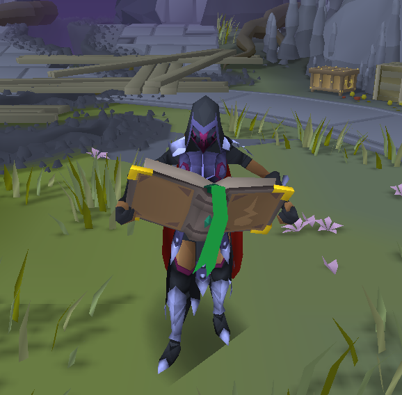

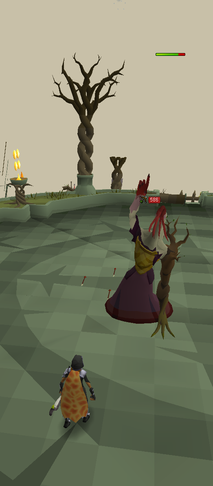

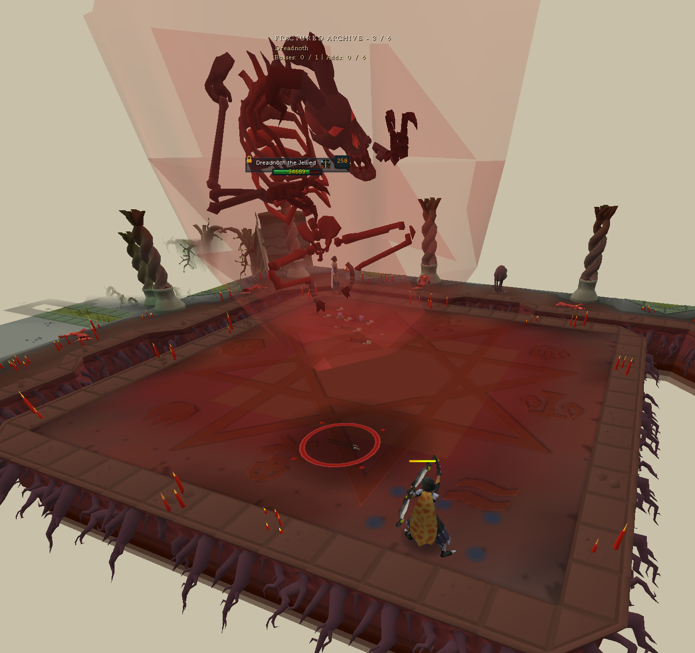

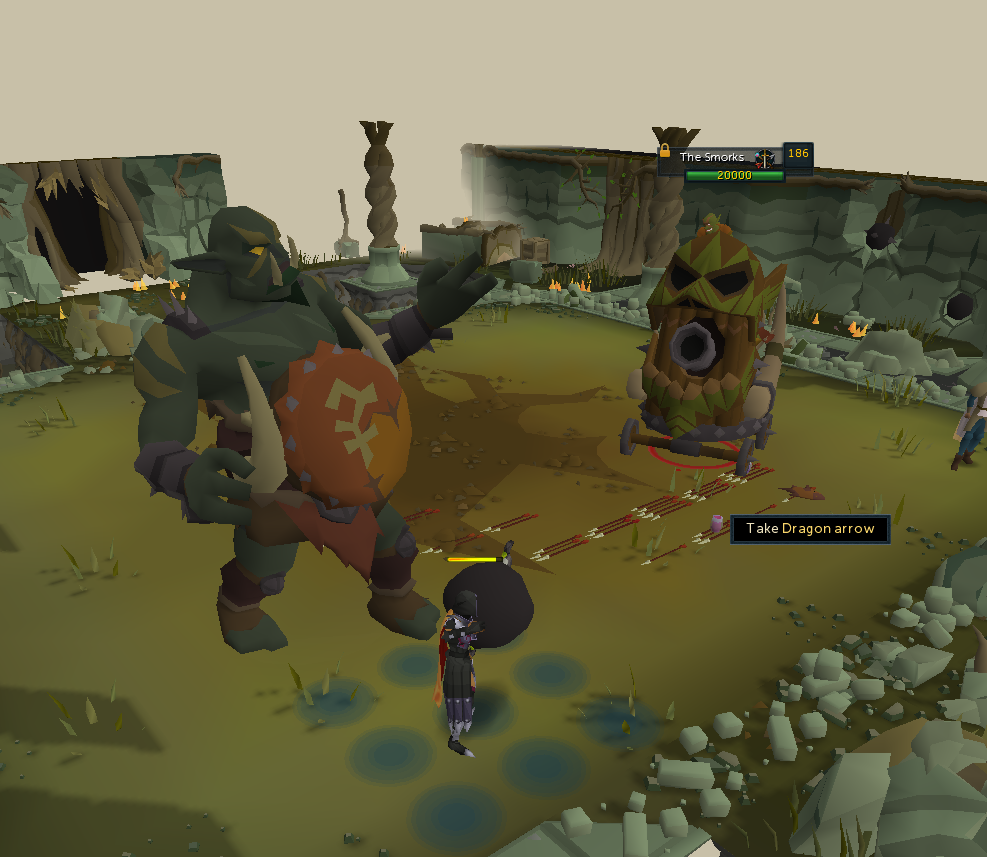
Combat and equipment

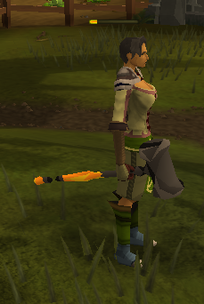

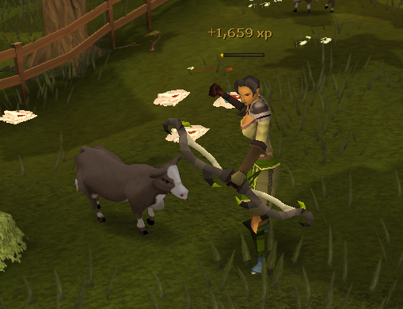

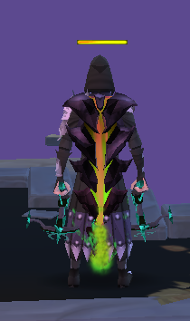

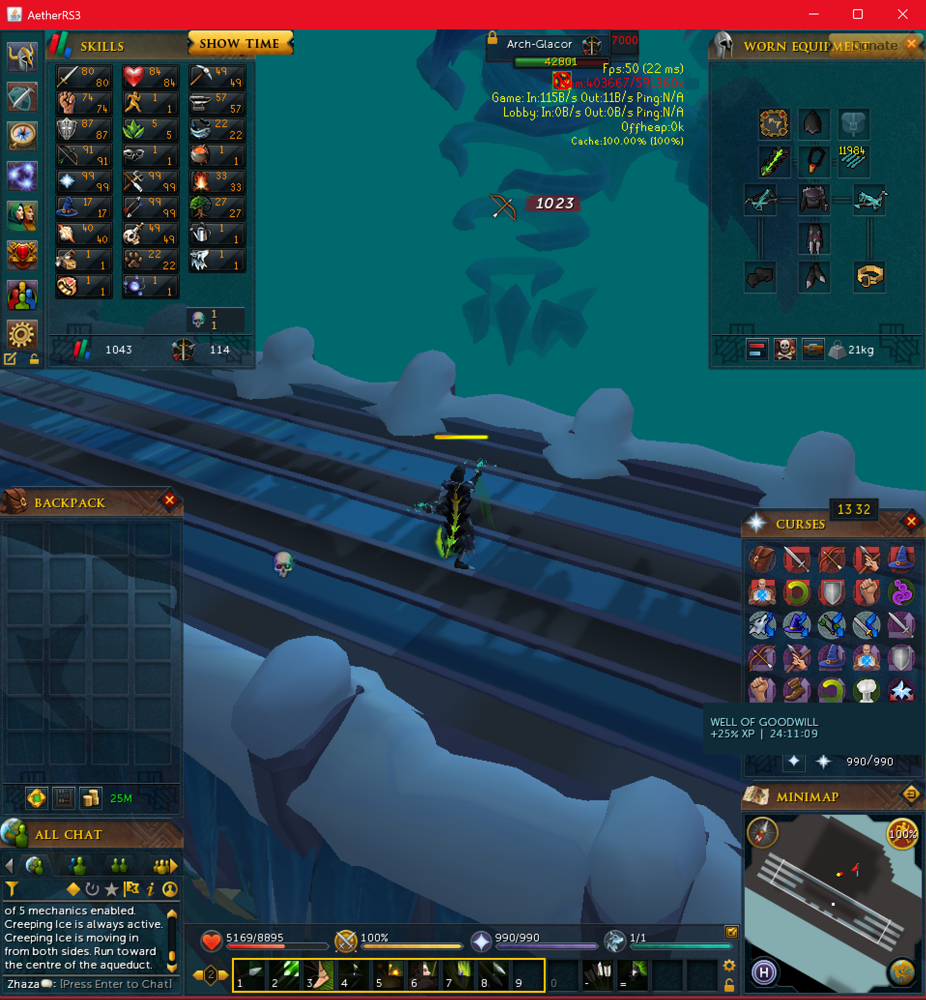

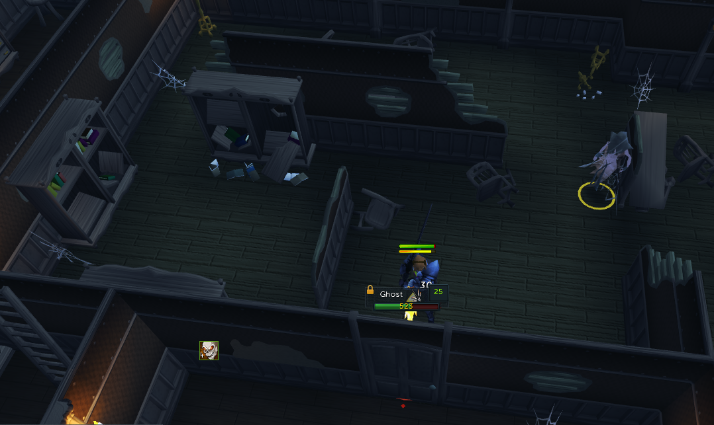
Chambers of Xeric

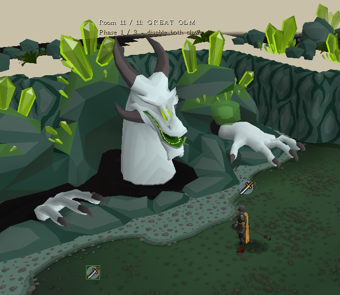

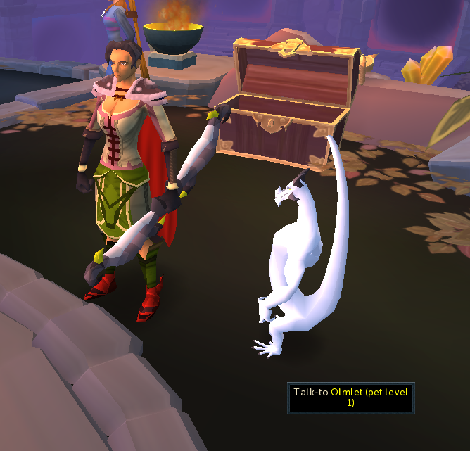

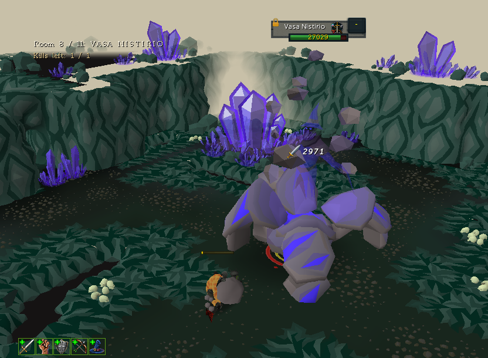

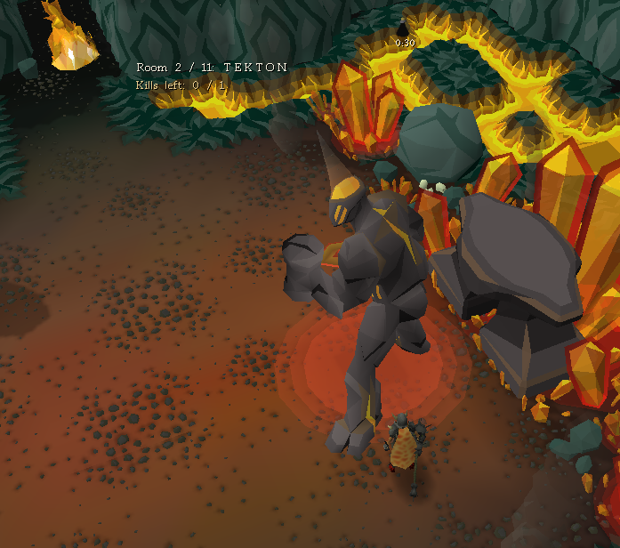